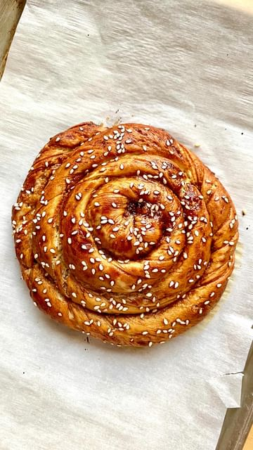

Tahina rolls! Many variations of these rolls are popular in Armenia and surrounding countries. Simple to make and the perfect breakfast pastry.
recipe by @pierceabernathy (Pierce Abernathy) - see original post

ingredients:
Dough//
255 grams warm water (105f)
1 tbsp sugar
2 tsp yeast
86 grams unsalted butter
320 grams flour
1/2 tsp salt
Filling//
3/4 cup sugar
3/4 cup tahini
1 1/2 tsp cinnamon
1/2 tsp salt
Egg wash//
1 Egg yolk
1 tbsp Date molasses
Sesame seeds to garnish
Preparation:
1. For the dough, in a large mixing bowl combine the warm water with the sugar and yeast and allow to bloom for 5 minutes. Add the butter, flour and salt and mix until dough forms. Transfer to a clean work surface and knead until smooth dough forms. Cover and let sit for 15 minutes.
2. For the filling combine the tahini and sugar and set aside.
3. Preheat over to 375F/190C.
4. Roll out the dough into a large circle roughly 1/8 inch thick. Spread the tahini filling over dough. Sprinkle ground cinnamon over the filling evenly.
5. Make a small hole in the center of the dough and carefully begin to push dough away from the center. Letting it roll over itself until the filling is covered and a wreath is formed. Separate into 4 even strands.
6. Roll out each strand, twisting the dough until strand is roughly 3/4 inch thick. Shape the strand into a pinwheel tucking the exterior edge under the the pastry. Cover and let sit for 15 minutes.
7. For the egg wash combine the egg yolk and date molasses in a small bowl and whisk to combine. Brush pastry with egg wash and garnish with sesame seeds.
8. Bake for 20-22 minutes or until golden and cooked through.
#tahini #dessert #pastry #asmrfood #cinnamonrolls #armenianfood